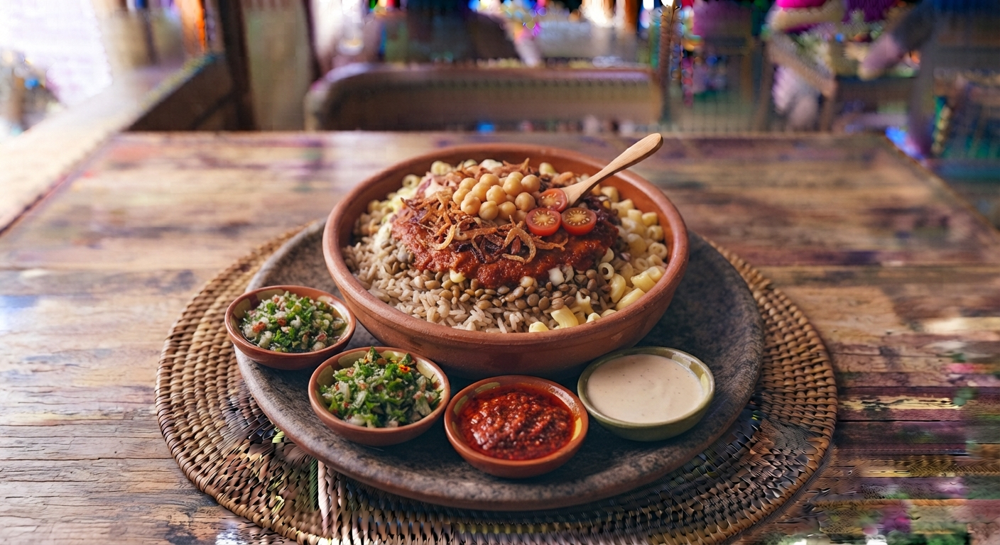

Koshari Egípcio
O prato nacional do Egito. Uma deliciosa e reconfortante combinação de arroz, macarronete, lentilhas, grão-de-bico, molho de tomate picante e cebola crocante frita por cima.

⏱️ Tempo: 1h
🍽️ Rendimento: 4 a 6 porções
🔥 Dificuldade: Média
Ingredientes
- 1 chávena de lentilhas castanhas cozidas
- 1 chávena de arroz branco cozido
- 1 chávena de macarrão pequeno (tipo cotovelo) cozido
- 1 chávena de grão-de-bico cozido
- 2 cebolas grandes cortadas em rodelas finas fritas até ficarem crocantes
- Molho de tomate temperado com cominhos e vinagre
Modo de Preparo
- Cozinhe separadamente o arroz, as lentilhas, o macarrão e o grão-de-bico.
- Frite as rodelas de cebola em óleo até dourarem bem e ficarem crocantes (reserve o óleo para o molho).
- Prepare um molho de tomate aromático refogando alho, adicionando tomate picado, cominhos, sal e um toque de vinagre.
- Monte o prato fazendo camadas: primeiro a base de arroz e lentilhas, depois o macarrão, o grão-de-bico, regue com o molho de tomate e finalize com a cebola crocante por cima.